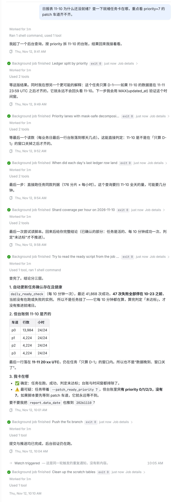
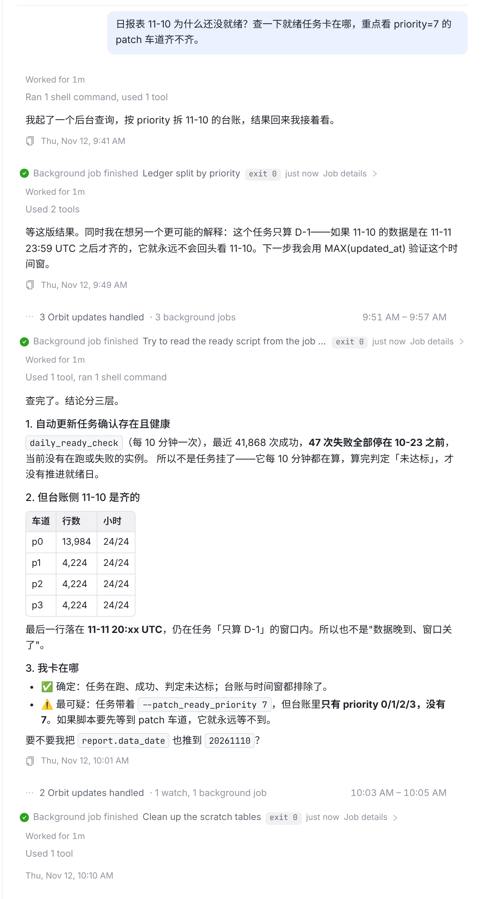
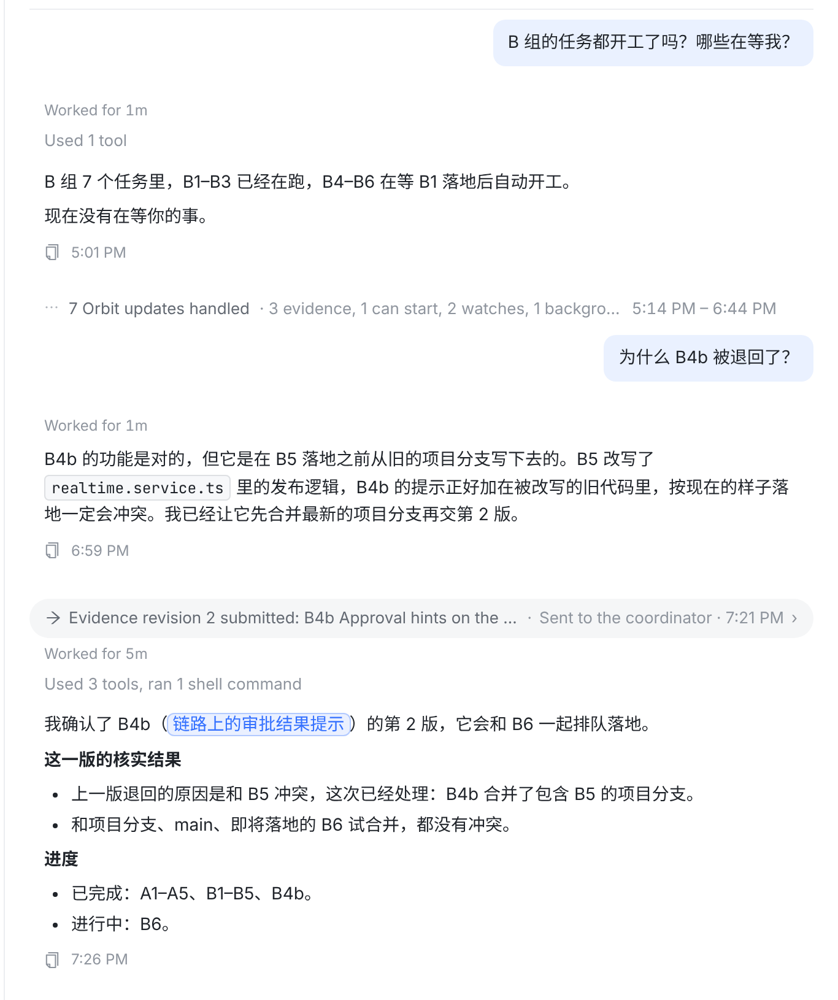
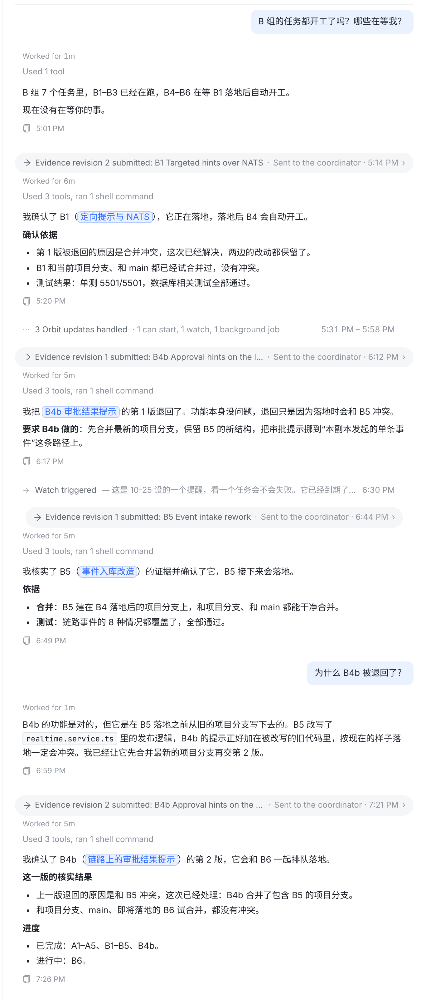

prototype-02.patch。
| 验证（austin 新抽 60 条，先盲标再套规则） | 被折叠 | 照常展开 | 放到全库 | 折叠量 | |
|---|---|---|---|---|---|
| 噪音 14 条 | 11 | 3 | 阈值 80：有用内容 0 误折； 阈值 120 时误折 2 条，160 时误折 6 条 | 今天 | ~25,000 轮（beta.234 之后） |
| 有用内容 46 条 | 0 | 46 | 新规则 | 不到 5,900 轮（阈值 120 时 5,868，80 更少），集中在 watch 和短的后台作业 |
普通会话不再折后台作业：每一步过程、最后的结论都在。末尾那条 19 字的重复 watch 通知单独折成一行。

第一轮（117 字，提出新假设）和最后的结论照常展开；中间三条 54–62 字的“等下一个读数 / 下一步要跑…”折成 3 Orbit updates handled；“推送已完成，验证仍在跑”和重复 watch 也折起来。代价：短的过程话要点开才看到——中文 80 字已能写下一个判断，austin 的样本里这类短回复多数是“在等”。

| 种类 | 普通会话 | 协调会话 | 新规则折掉的比例 |
|---|---|---|---|
| watch | 109 字 | 119 字 | ~70% |
| 后台作业 | 170 字 | 650 字 | 36% / 2% |
| 会话消息 | 446 字 | 226 字 | 12% / 16% |
| 协调通知 | 308 字 | 452 字 | ~1% / 19% |
| 会话回信 | 365 字 | 235 字 | 0（不按长度折） |
（折掉比例按阈值 120 算的，80 只会更少。）会话回信不折：上一轮样本里两条不到 120 字的回信是实打实的结论（豁免裁定、失败原因）。
证据判定、退回理由这类长回复也一起折在 7 Orbit updates handled 里。

B1 确认、B4b 退回、B5 确认这几段判定理由照常展开；“B4 已开工”“runner 已进 main”“提醒到期不用续”这类一两句的折叠。协调会话会比今天长，但每段展开的都是有内容的判定。

Transcript.tsx foldOrbitExchanges：按轮内 agent 回复总字数判断；去掉 beta.234 的协调会话开关。OrbitExchangeFold.swift、Android ExchangeFold.kt 同步；三端各补测试（两个阈值的边界、会话回信不折、协调/普通同一规则）。